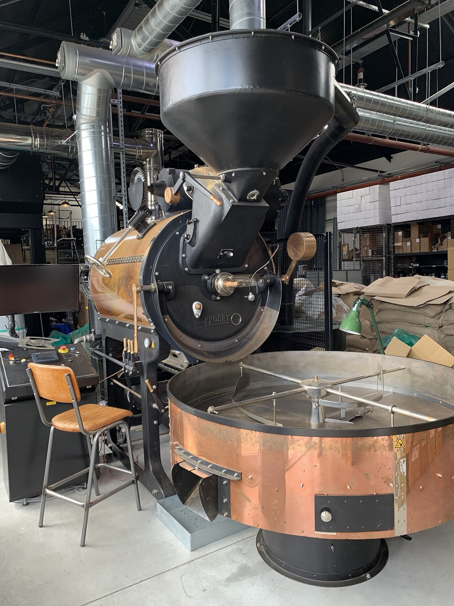
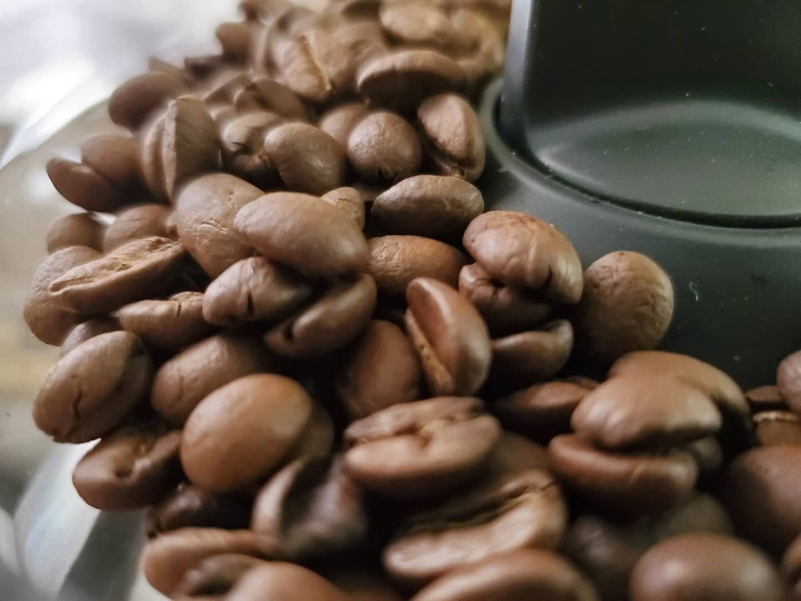
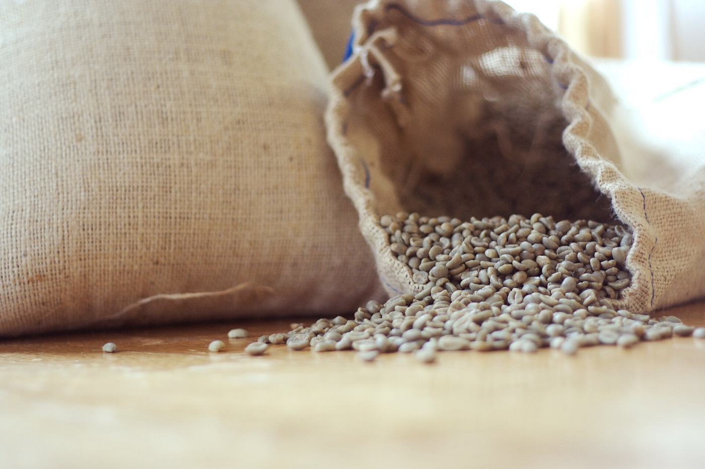
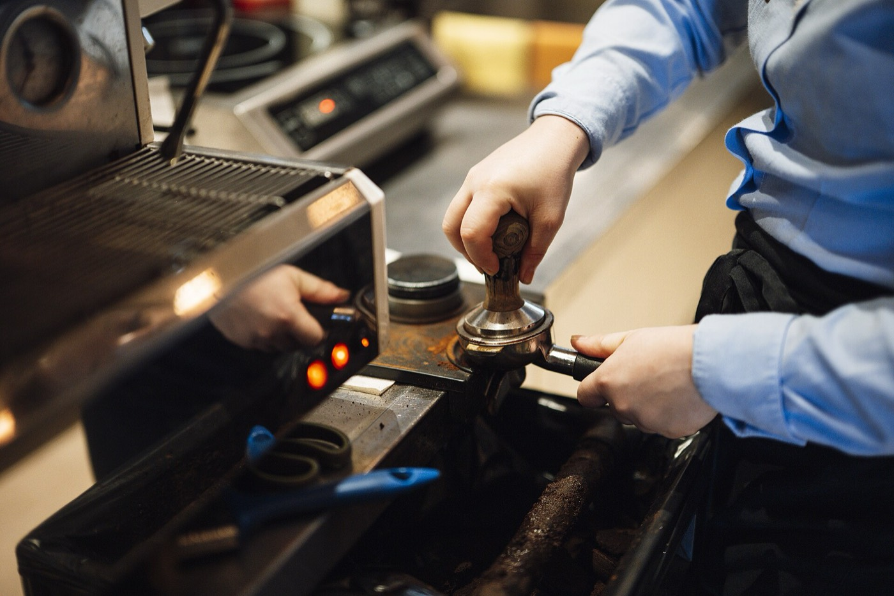

Tostador de especialidad · desde 2019
El café no se estropea en la cafetera. Se estropea antes.
Compramos grano trazable hasta la finca, lo tostamos en tandas pequeñas y lo mandamos entre tres y siete días después del tueste. Ni antes, porque necesita reposar, ni mucho después.

Cómo trabajamos
Trazable hasta la finca significa que sabemos el nombre del productor, la altitud y el lote. Si no lo sabemos, no lo compramos.
Cafés
Cafés
Seis cafés, y ninguno por rellenar la carta.
Cambian con la cosecha. Cuando un lote se acaba, se acaba: no lo sustituimos por otro parecido y con el mismo nombre.

Precios por bolsa de 250 g de grano entero. Molido bajo pedido, indicando el método.
Orígenes
El café fresco no existe todo el año en todas partes.
Cada origen se cosecha en su ventana. Por eso una carta honesta cambia con el calendario y no ofrece lo mismo en enero que en agosto.

Ver los orígenes en tabla
Ventanas de cosecha habituales, no fechas exactas: se mueven cada año con la lluvia. Colombia y Kenia aparecen dos veces porque tienen una cosecha principal y una secundaria.
Tueste
Once minutos que deciden a qué sabe.
Un tueste no es «claro» o «oscuro»: es una curva de temperatura en el tiempo. Estas son las tres que usamos, y la diferencia entre ellas se nota en la taza.
Curvas de referencia de nuestro tambor de 12 kg. El punto de giro es el mínimo tras cargar el grano frío; el primer crack es cuando el grano revienta y empieza a expandirse. La temperatura de salida y los minutos posteriores al crack son lo que más cambia el resultado.
Cata
Seis ejes para decir lo que una etiqueta no dice.
«Notas de chocolate» no le sirve de nada si lo que usted quiere saber es si va a estar ácido. Esto sí.
Ver los valores en tabla
Puntuaciones de 0 a 10 de nuestra mesa de cata, con tres catadores y a ciegas. Es una valoración nuestra, no una norma: otro tostador puntuaría distinto el mismo lote.
Suscripción
Café recién tostado, sin tener que acordarse.
Elija cada cuánto y cuánto. Se puede pausar, cambiar o cancelar desde un enlace del propio correo, sin llamar a nadie.
Precios por envío. El envío peninsular es gratuito a partir de dos bolsas. Sin permanencia y sin penalización por cancelar.
Hostelería
Un buen café mal extraído sigue siendo un mal café.
Por eso con la hostelería no vendemos sólo grano: montamos la máquina, ajustamos el molino y formamos al equipo. Y volvemos.

Preparación
Las proporciones que usamos nosotros.
No hay una receta única, pero sí un punto de partida decente para cada método. Ajuste desde aquí, no desde cero.
Créditos de las imágenes
Fotografías de Wikimedia Commons con licencia libre, atribuidas a su autor.
Con agua entre 92 y 96 °C y molido ajustado al método. Si sale amargo, muela más grueso; si sale ácido y aguado, más fino. Ese es casi todo el secreto.
Preguntas
Lo que más nos preguntan.
Contacto
Escríbanos y le decimos qué café le pega.
Si nos cuenta cómo lo prepara y qué le gusta beber, le recomendamos uno concreto en vez de mandarle la carta entera.
Elige tu café
Cuatro preguntas y le decimos cuál.
Ninguna de ellas es sobre notas de cata. Son sobre cómo bebe usted el café, que es lo que de verdad decide.
Receta
Cambie el agua y el café se ajusta solo.
Escriba en cualquiera de los dos campos: el otro se recalcula manteniendo la proporción del método.
Las proporciones son las que usamos en la barra. Si le sale amargo, muela más grueso antes de tocar la receta; si le sale ácido y aguado, más fino. El molido cambia más el resultado que un gramo arriba o abajo.
Proporción café : agua
Qué va con qué
No todo café vale para todo método.
Cuanto más oscura la celda, mejor funciona esa combinación. Es nuestra valoración, no una verdad revelada.
Puntuación de 0 a 5 de nuestra barra, probando cada café en cada método con la receta de la página anterior. Un 2 no significa que esté malo: significa que ese café da más de sí en otro sitio.
Comparar
Dos cafés, uno enfrente del otro.
La barra crece hacia el lado del café que más tiene de cada cosa. Sirve para decidir entre dos, que es la duda de verdad.
Mismos seis ejes que la mesa de cata, de 0 a 10. Dos cafés pueden tener la misma puntuación total y no parecerse en nada: por eso se compara eje por eje y no con una nota global.
Trazabilidad
Un lote, desde la finca hasta su taza.
Este es el recorrido completo del lote de Huila que hay ahora en la carta. Ocho pasos y siete meses.
Fechas de un lote de ejemplo con la estructura real de nuestra trazabilidad. En la bolsa que le llega figuran el productor, la altitud y el número de lote, y con ellos se puede reconstruir esta misma línea.
Cronómetro
Le vamos diciendo qué toca.
Elija el método, dele a empezar y deje el móvil apoyado. Va avanzando solo y le dice cuánta agua lleva echada.
Los tiempos son los de nuestra receta. Si su molino muele distinto al nuestro, ajuste el molido antes que el cronómetro.